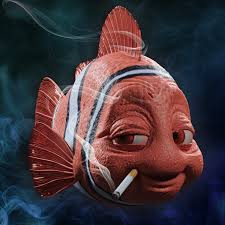

MARINE SPECIES

COMMONClownfish
Amphiprioninae
Colorful reef fish known for its mutualistic relationship with sea anemones.
Shallow coral reefs
 COMMON
COMMON
Dwarf Pygmy Goby
Pandaka pygmaea
One of the smallest fish species in the world found in coastal waters.
Brackish coastal waters
 ENDANGERED
ENDANGERED
Giant Grouper
Epinephelus lanceolatus
Large reef-dwelling fish important for marine ecosystem balance.
Coral reefs and lagoons
 CRITICAL
CRITICAL
Largetooth Sawfish
Pristis pristis
Critically endangered fish with a distinctive saw-like snout.
Coastal waters and estuaries
 ENDANGERED
ENDANGERED
Napoleon Wrasse
Cheilinus undulatus
Large reef fish recognized for its thick lips and intelligence.
Coral reefs
 ENDANGERED
ENDANGERED
Pelagic Thresher Shark
Alopias pelagicus
Shark species known for its long whip-like tail used when hunting.
Open tropical oceans
 ENDANGERED
ENDANGERED
Green Sea Turtle
Chelonia mydas
Large marine turtle commonly found in tropical Philippine waters.
Coastal waters, seagrass beds
 ENDANGERED
ENDANGERED
Whale Shark
Rhincodon typus
The largest fish species, known for gentle behavior.
Open tropical oceans
 ENDANGERED
ENDANGERED
Whale
Cetacea
Large marine mammals that play a vital role in ocean ecosystems.
Deep and open oceans